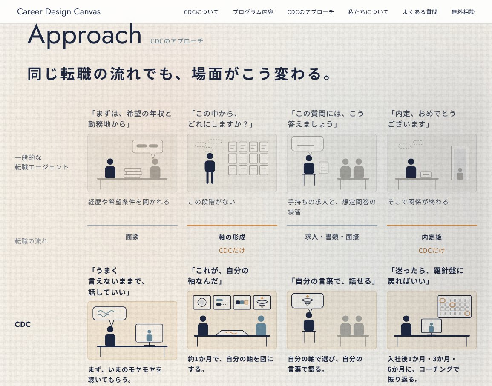
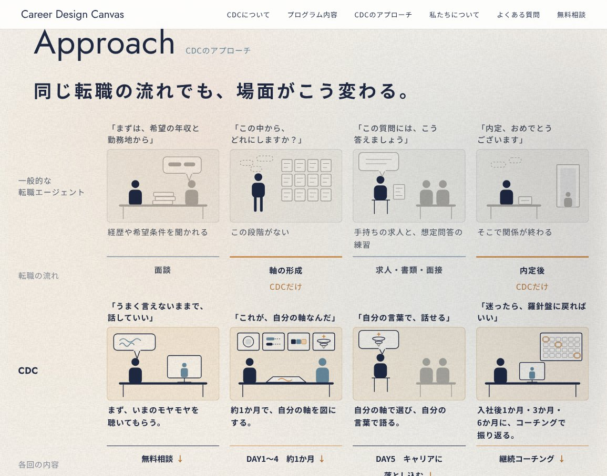

「同じ転職の流れでも、場面がこう変わる」見比べ
見出しから表の下の入口まで、一つの画面にゆとりを持って収まる形にしました。どちらも、場面の絵は画面の高さに合わせて縮みます（形は同じ）。
PC 1440×900
PC 1155×907（いまお使いの画面の大きさ）
いま

A

B
スマホは、回ごとに「エージェント｜CDC」を左右に並べる今の形のままです。
見出しから表の下の入口まで、一つの画面にゆとりを持って収まる形にしました。どちらも、場面の絵は画面の高さに合わせて縮みます（形は同じ）。


スマホは、回ごとに「エージェント｜CDC」を左右に並べる今の形のままです。